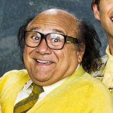

About Frank
Franklin "Frank" Reynolds (aka: The Warthog) is the father of Dennis Reynolds and Dee Reynolds, and the ex-husband of Barbara Reynolds. Frank also lives with his apparent biological son (and ex-husband), Charlie Kelly.
He is a member of "The Gang" that owns and runs Paddy's Pub. He used to be prim and proper, but after he divorced Barbara, he let himself lose all convictions and live with no moral compass or decency.
Connect with Me